Электромагнит для
получения переменного однородного магнитного
поля с индукцией до 0.5 Тл в зазоре сечением 40 х 40 кв. мм высотой 10 мм
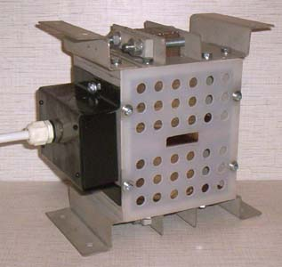
Назначение
Электромагнит изначально предназначен для получения переменного однородного магнитного поля с возможностью регулировки по величине индукции посредством изменения тока в обмотках и по частоте, но может также использоваться для получения постоянного магнитного поля или работать в импульсном режиме [13]. Сферы применения: намагничивание и размагничивание постоянных магнитов (в импульсном режиме), размагничивание стальных образцов, изучение магнитных свойств веществ при работе в составе магнитометров, калибровка приборов для измерения магнитных полей [11] и измерительных катушек [7], проведение экспериментов, требующих применения переменного магнитного поля, и т. п.
Конструкция
Поскольку предполагался режим работы электромагнита средней продолжительности (примерно 1 ... 5 минут) с последующим отключением и охлаждением, а ограничения по потребляемой мощности отсутствовали, то для упрощения конструкции ярмо магнитной системы было решено собрать из сплошной малоуглеродистой стали, а сердечники катушек для улучшения параметров переменного магнитного поля в рабочем зазоре - из листовой электротехнической стали (или при необходимости даже из листовой малоуглеродистой стали). Магнитная система (ярмо) состоит из четырех плит из сплошной малоуглеродистой стали: верхняя, нижняя и две боковых (рис. 1). К боковым плитам крепятся стальные сердечники, каждый из которых представляет из себя пакет, набранный из листов электротехнической стали. На сердечники надеты катушки, намотанные медным проводом. Между катушками вставлены немагнитные распорки. Конструкция устанавливается на опорные уголки в вертикальном или горизонтальном положении (рис. 2, 3), чтобы обеспечить удобство в работе. На верхней плите ярма крепится закрываемая крышкой клеммная коробка, посредством которой выводы катушек подключаются к питающему кабелю.
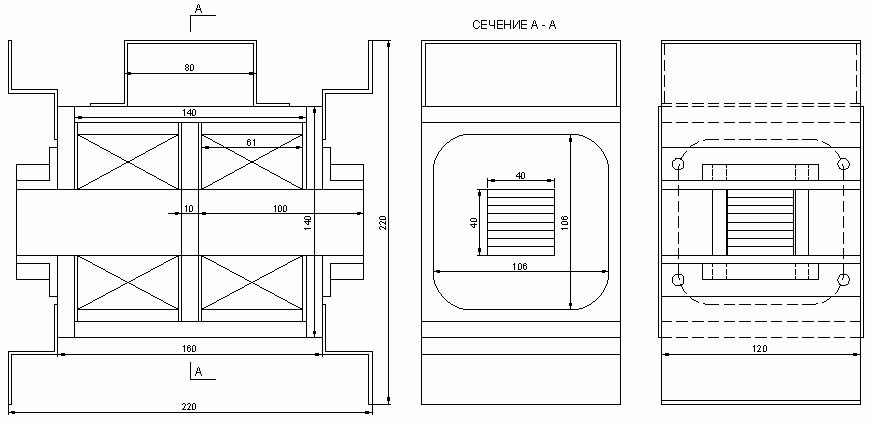
Рис. 1. Конструкция электромагнита переменного тока.
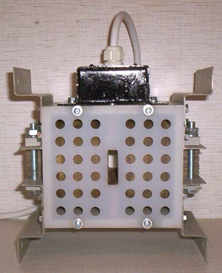
Рис. 2. Горизонтальная установка электромагнита переменного тока.
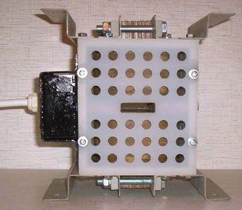
Рис. 3. Вертикальная установка электромагнита переменного тока.
Технические данные электромагнита:
Измерение взаимной зависимости напряжения питания, потребляемого тока и магнитной индукции в рабочем зазоре проводилось по схеме, показанной на рис. 4. Обмотки электромагнита ЭМ1 и ЭМ2 соединены параллельно и подключены через амперметр PA1 (цифровой мультиметр DT9205A в режиме амперметра переменного тока с диапазоном 20 А) к выходу регулируемого автотрансформатора (ЛАТР), запитанного от сети переменного тока напряжением 220 В частотой 50 Гц через автоматический выключатель S1 на 25 А. Для измерения выходного напряжения ЛАТРа используется вольтметр PV1 (цифровой мультиметр DT9205A в режиме вольтметра переменного напряжения с диапазоном 750 В или собственный вольтметр ЛАТРа). В центре рабочего зазора электромагнита размещен щуп с датчиком Холла (ДХ) ПХЭ606118В [5] тесламетра [1], имеющего аналоговый выход с коэффициентом преобразования 1 В/Тл. К этому выходу подключен мультиметр APPA-107N, работающий в режиме вольтметра переменного напряжения с диапазоном 2 В. Результаты измерений приведены в таблице 1 и на рис. 5 - 7.
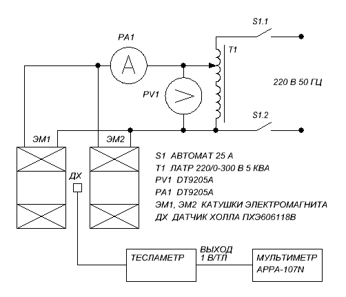
Рис. 4. Схема установки для измерения зависимости потребляемого электромагнитом тока от напряжения питания и магнитной индукции в рабочем зазоре от потребляемого тока.
Таблица 1. Соотношения между напряжением питания электромагнита, рабочим током, магнитной индукцией в центре зазора (обмотки соединены параллельно, рабочая частота 50 Гц, все значения действующие).
| Рабочее напряжение U, В | 0 | 20 | 50 | 80 | 100 | 120 | 150 | 180 | 200 | 220 | 250 | 286 |
| Рабочий ток I, А | 0 | 0.84 | 2.04 | 3.30 | 4.19 | 5.02 | 6.46 | 7.86 | 8.85 | 9.85 | 11.40 | 13.35 |
| Магнитная индукция в центре зазора B, Тл | 0 | 0.0343 | 0.0841 | 0.1345 | 0.1688 | 0.2019 | 0.2556 | 0.3079 | 0.3435 | 0.3804 | 0.4353 | 0.5040 |
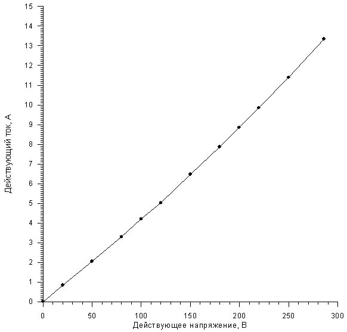
Рис. 5. Зависимость величины рабочего тока электромагнита от приложенного напряжения (обмотки соединены параллельно, рабочая частота 50 Гц, значения тока и напряжения действующие).
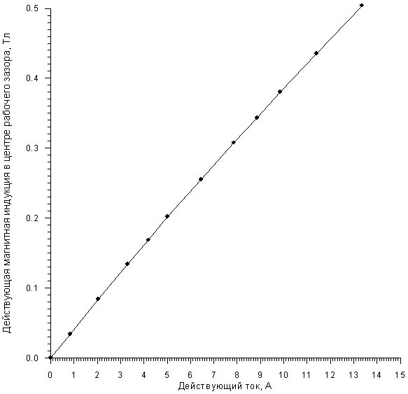
Рис. 6. Зависимость магнитной индукции в центре рабочего зазора электромагнита от величины питающего тока (обмотки соединены параллельно, рабочая частота 50 Гц, значения индукции и тока действующие).
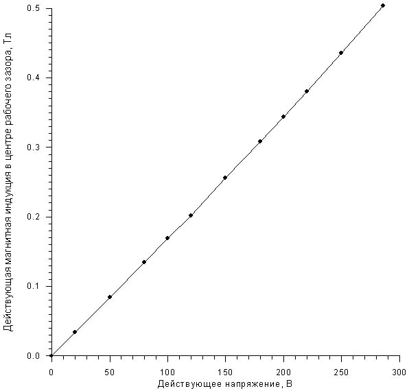
Рис. 7. Зависимость магнитной индукции в центре рабочего зазора электромагнита от величины питающего напряжения (обмотки соединены параллельно, рабочая частота 50 Гц, значения индукции и напряжения действующие).
Измерение распределения магнитного поля в рабочем зазоре проводилось с использованием схем, показанных на рис. 8. Схема измерений на переменном токе (слева), аналогична схеме, приведенной на рис. 4. Для измерений на постоянном токе вместо ЛАТРа использовался источник питания повышенной мощности с постоянным выходным напряжением 12.6 В [9]. Щуп с датчиком Холла (ДХ) крепится к измерительной линейке, которая может перемещаться внутри рабочего зазора электромагнита. Нулевое положение датчика соответствует его местонахождению в центре рабочего зазора. При этом сам датчик может иметь смещение по осевой линии зазора в сторону одного из полюсных наконечников. Отрицательные значения перемещения - датчик выдвигается из зазора, положительные - вдвигается в зазор. При проведении измерений необходимо поддерживать постоянную величину тока в обмотках электромагнита. Результаты измерений приведены в таблице 2 и на рис. 9.
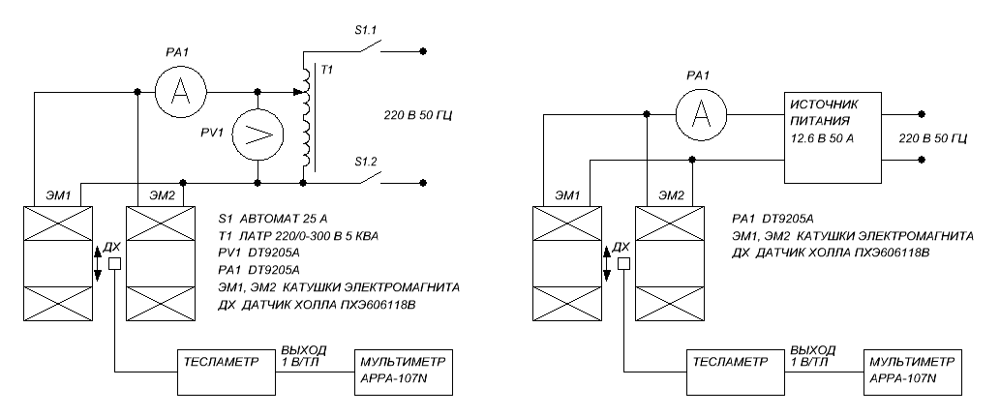
Рис. 8. Схемы установок для измерения распределения магнитного поля в рабочем зазоре электромагнита. Слева - схема для измерений на переменном токе, справа - на постоянном.
Среднее значение магнитной индукции вычислялось для диапазона -15 ... +15 мм (рабочая зона диаметром 30 мм высотой 10 мм). Среднеквадратичное отклонение вычислялось по формуле [6]:
где S(N) - среднеквадратичное отклонение измеряемой величины, N - число отсчетов (N = 7), xi - значение измеряемой величины для i-го отсчета, x - среднее значение измеряемой величины.
Таблица 2. Распределение магнитной индукции в рабочем зазоре электромагнита вдоль средней линии зазора. Среднее значение и среднеквадратичное отклонение магнитной индукции в зоне повышенной однородности магнитного поля.
| Расстояние от центра зазора, мм | -20 | -15 | -10 | -5 | 0 | 5 | 10 | 15 | 20 | Среднее значение магнитной индукции на дистанции -15 ... +15 мм, Тл | Среднеквадратичное отклонение магнитной индукции на дистанции -15 ... +15 мм, Тл |
| Магнитная индукция, Тл (переменный ток 5 А частотой 50 Гц) | 0.1503 | 0.2038 | 0.2137 | 0.2139 | 0.2123 | 0.2126 | 0.2089 | 0.2092 | 0.1979 | 0.21063 | 0.003616 (≈2 %) |
| Магнитная индукция, Тл (постоянный ток 13 А) | 0.4289 | 0.5710 | 0.5872 | 0.5832 | 0.5795 | 0.5795 | 0.5802 | 0.5716 | 0.5076 | 0.57889 | 0.005852 (≈1 %) |
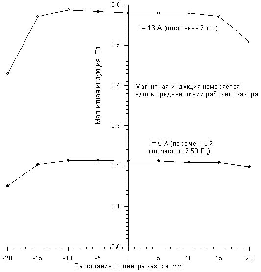
Рис. 9. Распределение магнитной индукции в рабочем зазоре электромагнита (вдоль середины зазора вблизи одного из полюсных наконечников).
Источники питания
Для возбуждения тока в обмотках электромагнита применимы различные источники питания [13], обеспечивающие на выходе как регулируемое, так и нерегулируемое переменное [10], постоянное [8, 9] или импульсное [2 - 4] напряжение. Питание переменным током частотой 50 Гц можно осуществлять либо напрямую от сети переменного тока напряжением 220 В, либо через регулируемый автотрансформатор (ЛАТР, рис. 10), либо через тринисторный регулятор мощности [10] (рис. 11). Если частоту питающего тока необходимо изменять, то подойдет частотный преобразователь или генератор сигналов с усилителем мощности [12]. Контролировать величину магнитной индукции в рабочем зазоре электромагнита можно напрямую с помощью тесламетра [1, 11] или измерительной катушки [7], а также косвенным методом по потребляемому току или напряжению питания через калибровочную кривую (рис. 6, 7), причем метод контроля по напряжению питания менее точный, так как при нагревании обмоток ток и магнитная индукция уменьшаются.
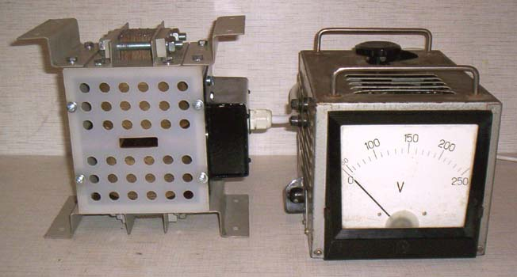
Рис. 10. Электромагнит переменного тока в комплекте с регулируемым автотрансформатором мощностью 1 кВА. Ток питания в непрерывном режиме до 4 А, в повторно-кратковременном - до 10 А.
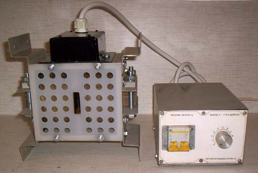
Рис. 11. Электромагнит переменного тока в комплекте с однофазным тринисторным регулятором мощности [10].
Ссылки:
11.04.2018
25.06.2018
Альтернативные источники
энергии
Компьютеры и
Интернет
Магнитные поля
Механотронные системы
Перспективные
разработки
Электроника и
технология